조경산업기사 (2017-05-07 기출문제)
1과목: 조경계획 및 설계
1. 프랑스 보르 뷔 콩트(Vaux-le-Vicomte)는 어느 정원 양식에 속하는가?
- 중정식(中庭式)
- 노단건축식(露壇建築式)
- 자연풍경식(自然風景式)
- 평면기하학식(平面幾何學式)
(정답률: 88%)

2. 당(唐)나라 시기의 정원을 알 수 있는 문헌은?
- 시경
- 동파종화
- 춘추좌씨전
- 낙양명원기
(정답률: 61%)
3. 우리나라 민가정원에서 일반적으로 안뜰에 정심수(庭心樹)를 심지 않았던 이유로 전해오는 것은?
- 자손이 귀해 진다.
- 집안이 빈곤해 진다.
- 마당에 그늘이 든다.
- 보기가 싫기 때문이다.
(정답률: 83%)
4. 일본에서 대표적인 평정고산수 수법의 정원이 있는 곳은?
- 서방사
- 용안사
- 금각사
- 평등원
(정답률: 76%)
5. 고려시대 궁궐조경의 설명으로 옳은 것은?
- 첩석성산을 만들고 아름다운 화목으로 화려하게 꾸몄다.
- 공간배치는 불교의 영향으로 풍수설을 배척하였다.
- 만월대 궁원의 공간배치는 동서축을 기본으로 한다.
- 고려시대 화원은 궁궐의 조경을 관리하던 곳이다.
(정답률: 63%)
6. 고정원 및 동천(洞天)의 유적과 가장 가까운 개념은?
- 사찰(寺刹)
- 염승(厭勝)
- 원림(園林)
- 수림지(樹林地)
(정답률: 75%)
7. 조성 시기가 가장 빠른 르네상스(Renaissance)시대의 정원은?
- 메디치장(Villa Medici)
- 토스카나장(Villa Toscana)
- 아드리아나장(Villa Adriana)
- 로렌티아나장(Villa Laurentiana)
(정답률: 77%)
8. 다음 작자와 저서의 연결이 잘못된 것은?
- 계성：난정기(蘭亭記)
- 귤준망：작정기(作庭記)
- 백거이：동파종화(東坡種花)
- 이격비：낙양명원기(洛陽名園記)
(정답률: 72%)
9. 야외음악당의 바닥에 다음 중 어느 색을 주조(主調)로 처리하면 청중의 감정효과가 가장 크게 되겠는가?
- 주황색
- 연두색
- 파랑색
- 남색
(정답률: 83%)
10. ｢국토의 계획 및 이용에 관한 법률｣의 도시·군 기본계획의 수립권자가 될 수 없는 사람은?
- 군수
- 시장
- 광역시장
- 환경부장관
(정답률: 89%)
11. 환경분석시 사용하는 지리정보체계라고 부르는 프로그램은?
- GIS
- IMGRID
- SYMAP
- CAD
(정답률: 95%)
12. 기본설계(preliminary design)에서 행할 사항이 아닌 것은?
- 정지계획
- 배수설계
- 식재계획
- 공정표
(정답률: 80%)
13. 주택단지 쿨데삭 도로의 일반적 기능별 구분을 나타낸 것으로 옳은 것은?
- 길이：240m(최대), 회전반경：12m
- 길이：15~18m(최대), 회전반경：9m
- 길이：18~24m(최대), 회전반경：12m
- 폭：24m
(정답률: 71%)
14. 국립공원의 지정 시 거쳐야 할 지정절차를 순서대로 맞게 나열한 것은?
- 관할 시·도지사 및 군수의 의견 청취 → 주민설명회 및 공청회의 개최 → 관계 중앙행정기관장과의 협의 → 국립공원위원회의 심의
- 관계 중앙행정기관장과의 협의 → 관할 시·도지사 및 군수의 의견 청취 → 주민설명회 및 공청회의 개최 → 국립공원위원회의 심의
- 주민설명회 및 공청회의 개최 → 관할 시·도지사 및 군수의 의견 청취 → 관계 중앙행정기관장과의 협의 → 국립공원위원회의 심의
- 관할 시·도지사 및 군수의 의견 청취 → 관계 중앙행정기관장과의 협의 → 국립공원위원회의 심의 → 주민설명회 및 공청회의 개최
(정답률: 78%)
15. 조경설계의 방위표시 방법에 대한 설명 중 틀린 것은?
- 단순하고 알아보기 쉬워야 한다
- 확실하고 직선적인 화살표로 한다.
- 항상 도면의 위쪽이나 오른쪽에 두고 때로는 도면에서 생략한다.
- 가능하면 수직으로 세워 끝이 위로 가게하고, 수평선에서 위쪽으로 약간의 각을 준다.
(정답률: 84%)
16. 축(axis)에 대한 설명으로 옳지 못한 것은?
- 지향적(指向的)
- 자연적(自然的)
- 질서적(秩序的)
- 우세적(優勢的)
(정답률: 75%)
17. 일반적인 조경포장의 설명 중 ( )안에 적합한 것은?
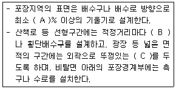
- A：0.03 B：종단배수구 C：측구
- A：0.1 B：측구 C：빗물받이
- A：0.3 B：종단배수구 C：맹암거
- A：0.5 B：빗물받이 C：측구
(정답률: 67%)
18. 기계적 효능과 미적질서를 통일시킴으로써 보다 완벽한 공간의 창조를 위한 선구적 디자인 교육기관이었던 것은?
- 에꼴드 보자르
- 바우하우스
- 하바드
- 로얄 아카데미
(정답률: 76%)
19. 다음 중 조경설계기준 상의 운동시설에 대한 설명으로 틀린 것은?
- 육상경기장 코스의 폭은 0.8m를 표준으로 한다.
- 배구장은 바람의 영향을 받기 때문에 주풍 방향에 수목 등의 방풍시설을 마련한다.
- 농구코트의 방위는 남-북 축을 기준으로 하고, 가까이에 건축물이 있는 경우에는 사이드 라인을 건축물과 직각 혹은 평행하게 배치한다.
- 축구장의 표면은 잔디로 하며, 잔디가 아닐 경우는 스파이크가 들어갈 수 있을 정도의 경도로 슬라이딩에 의한 찰과상을 방지할 수 있는 포장으로 한다.
(정답률: 70%)
20. 다음 설명의 ( )안에 적합한 것은?
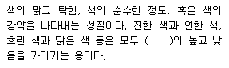
- 색상
- 명도
- 조도
- 채도
(정답률: 75%)
2과목: 조경식재
21. 차량이 주행할 때 측방차폐 효과를 얻기 위한 열식수(列植樹)의 수고가 4m, 수관반경이 2m인 경우에 가로수의 식재거리는 얼마을 유지해야 하는가? (단, 진행방향에 대한 시각은 30°이다.)
- 4m
- 6m
- 8m
- 12m
(정답률: 69%)
22. 식재형식은 정형식, 자연풍경식, 자유식으로 분류한다. 다음 중 자연풍경식(自然風景式) 식재의 기본패턴에 해당하지 않는 것은?
- 임의(랜덤)식재
- 배경식재
- 무늬식재
- 부등변삼각형식재
(정답률: 70%)
23. 양수로서 물속에서도 생육이 가능할 정도로 수분을 좋아하고 뿌리의 호흡을 위해 지상으로 울퉁불퉁하게 나온 천근성 기근(aerial root)이 발달한 수종은?
- 낙우송
- 일본잎갈나무
- 삼나무
- 거제수나무
(정답률: 75%)
24. 다음 [보기]의 설명에 해당하는 초화류는?
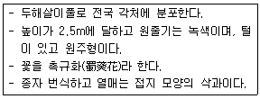
- 꽃양배추
- 매리골드
- 접시꽃
- 천일홍
(정답률: 71%)
25. 토양의 부식질 함량이 어느 정도 함유되어야 수목의 생장에 가장 좋은가?
- 0.5~5%
- 5~20%
- 20~30%
- 30~40%
(정답률: 63%)
26. 소나무과(科) 식물의 잎 특성 중 엽속(needle fascicle)내 잎의 수가 다른 것은?
- 소나무
- 곰솔
- 리기다소나무
- 방크스소나무
(정답률: 71%)
27. 다음 수목 중 학명이 틀린 것은?
- 수양버들：Salix koreensis
- 계수나무：Cercidiphyllum japonicum
- 함박꽃나무：Magnolia sieboldii
- 조팝나무：Spiraea prunifolia for. simpliciflora
(정답률: 63%)
28. 양버즘나무(Platanus occidentalis L.)의 특징으로 옳은 것은?
- 원산지는 한국이다.
- 꽃은 이가화이며 암꽃은 붉은색이다.
- 공해에 약하여 가로수로 부적합하다.
- 열매는 지름이 3cm 정도로 둥글게 1개씩 달린다.
(정답률: 63%)
29. 다음 중 미적효과와 관련된 식재형식이 아닌 것은?
- 표본식재
- 강조식재
- 군집식재
- 초점식재
(정답률: 36%)
30. 다음 식물의 생육환경에 대한 설명 중 적합하지 않은 것은?
- 토질은 배수성과 통기성이 좋은 사질양토를 표준으로 한다.
- 단립(團粒)구조로서 일정용량 중 토양입자 50%, 수분 25%, 공기 25%의 구성비를 표준으로 한다.
- 지하수위(地下水位)는 잔디의 경우 －30~－20cm 정도 되는 것이 수분흡수가 용이하여 가장 좋다.
- 식물의 생육에 알맞은 입단의 굵기는 1~5mm이고 근모는 0.001mm 이하의 공극으로는 침입할 수 없다.
(정답률: 68%)
31. 일반적으로 교목 식재작업에 대한 설명이 옳지 못한 것은?
- 식재 후 멀칭을 해준다.
- 나무의 정부(頂部)가 수직이 되도록 한다.
- 구덩이 속에 흙을 50% 정도 넣은 후 물조임(물반죽)을 한다.
- 가로수 식재의 마감면은 보도 연석면 보다 3cm 이하로 끝마무리 한다.
(정답률: 62%)
32. 종자 채집 후 정선을 위해 풍선법을 활용하기 가장 적합한 수종은?
- 옻나무
- 가문비나무
- 주목
- 목련
(정답률: 66%)
33. 리조트 단지 입구에 대형 수목을 식재하여 랜드마크(Landmark)를 형성하려고 한다. 식재기법으로 맞는 것은?
- 지표식재
- 경계식재
- 차폐식재
- 지피식재
(정답률: 83%)
34. 조경수목별 월별 개화기의 연결이 맞지 않은 것은?
- 2, 3월：호랑가시나무, 목서
- 3, 4월：물오리나무, 회양목
- 4, 5월：모과나무, 서어나무
- 6, 7월：치자나무, 자귀나무
(정답률: 68%)
35. 조경수 배식에서 실용적인 목적을 위해서 식재되는 녹음수 선정시 가장 부적합한 수종은?
- 위성류
- 느티나무
- 팽나무
- 벽오동
(정답률: 75%)
36. 다음 식물 중 진달래과(Ericaceae)에 해당하지 않는 것은?
- 만병초
- 영산홍
- 철쭉
- 죽단화
(정답률: 65%)
37. 다음 식물 중 부유식물이 아닌 것은?
- 부레옥잠
- 생이가래
- 개구리밥
- 붕어마름
(정답률: 56%)
38. 다음 중 내한성이 가장 약한 수종은?
- 구상나무
- 자작나무
- 전나무
- 개잎갈나무
(정답률: 53%)
39. 다음 중 인동덩굴에 대한 설명으로 틀린 것은?
- 반상록 활엽덩굴성 관목이다.
- 번식은 분근이 가장 용이하다.
- 꽃은 6~7월에 백색으로 피었다가 후에 황색으로 변한다.
- 줄기는 왼쪽으로 감아 올라가고, 1년생 가지는 청록색으로 속이 비어 있으며, 털이 밀생 한다.
(정답률: 64%)
40. 잔디의 일반적인 특성 중 밟힘에 견디는 힘(내답압성, 耐踏壓性)이 가장 약(弱)한 것은?
- 한국잔디
- bermuda grass
- bentgrass
- kentyucky bluegrass
(정답률: 62%)
3과목: 조경시공
41. 건설공사 표준품셈에 따른 운반공사에 대한 설명 중 틀린 것은?
- 인력 1회 운반량은 보통토사 25kg이다.
- 1일 실작업시간은 360분을 적용한다.
- 고갯길인 경우 수직거리 1m를 수평거리 6m의 비율로 적용한다.
- 품에서 규정된 소운반 거리는 20m 이내의 거리를 말한다.
(정답률: 87%)
42. 항공사진에서 수목의 종류를 판독하는데 가장 중요한 것은?
- 음영
- 색조
- 형태 및 배치
- 촬영조건
(정답률: 63%)
43. 재료의 할증률이 나머지 재료와 다른 것은?
- 목재(각재)
- 일반볼트
- 이형철근
- 시멘트벽돌
(정답률: 58%)
44. 다음 [보기]의 설명은 품질관리를 위한 어떤 도구 특징에 해당하는가?
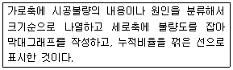
- 체크시트
- 파레토도
- 히스토그램
- 산점도
(정답률: 57%)
45. 다음 석재 중 수성암(퇴적암)에 속하며 준경석 또는 대부분 연석으로 내화성이 강하나, 흡수성이 크기 때문에 한랭지에서 풍화되기 쉬운 결점이 있는 것은?
- 대리석
- 화강암
- 응회암
- 점판암
(정답률: 66%)
46. 다음 ｢자전거 이용시설의 구조·시설 기준에 관한 규칙｣ 설명 중 A와 B에 적합한 값은?
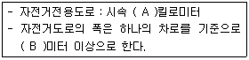
- A：25, B：1.0
- A：30, B：1.5
- A：25, B：1.2
- A：30, B：1.2
(정답률: 67%)
47. 경량(輕量) 콘크리트의 설명으로 옳은 것은?
- 직접 흙에 접하는 부분에는 사용하지 않는다.
- 흡수율이 크므로 골재를 완전히 건조시켜서 사용한다.
- 시공이 용이하여 사전 재료의 처리가 필요 없다.
- 철근의 이음길이와 정착 길이는 보통 콘크리트 보다 짧게 한다.
(정답률: 44%)
48. 공사의 발주방법 중 자금력과 신용 등에서 적합하다고 인정되는 특정 다수의 경쟁 참가자가 입찰하는 방법은?
- 대안입찰
- 공개경쟁입찰
- 지명경쟁입찰
- 제한적평균가낙찰제
(정답률: 71%)
49. 목재의 열에 관한 성질 중 옳지 않은 것은?
- 가벼운 목재일수록 착화되기 쉽다.
- 겉보기 비중이 작은 목재일수록 열전도율은 작다.
- 섬유에 평행한 방향의 열전도율이 섬유 직각 방향의 열전도율 보다 작다.
- 목재는 불에 타는 단점이 있으나 열전도율이 낮아 여러 가지 용도로 사용되고 있다.
(정답률: 71%)
50. 타일의 소지(素地) 중 규산을 화학성분으로 한 석영·수정 등의 광물로서 도자기 속에 넣으면 점성을 제거하는 효과가 있으며, 소지 속에서 미분화하는 것은?
- 납석
- 규석
- 점토
- 고령토
(정답률: 78%)
51. 8ton 덤프트럭에 자연상태의 사질양토를 굴착하여 적재 하려한다. 흐트러진 상태의 덤프트럭 1회 적재량은 얼마인가? (단, 사질양토 단위중량：1800kg/m3, L＝1.20, C＝0.85)
- 4.33m3
- 4.80m3
- 5.00m3
- 5.33m3
(정답률: 48%)
52. 생태호안 복구공사용 재료로 사용하기 가장 부적합한 것은?
- 섶단
- 돌망태
- 격자블럭
- 갈대뗏장
(정답률: 71%)
53. 표면건조 포화상태의 잔골재 500g을 건조시켜 기건 상태에서 측정한 결과 460g, 절대 건조상태에서 측정한 결과 440g이었다. 이때 흡수율은?
- 8%
- 8.7%
- 12%
- 13.6%
(정답률: 52%)
54. 비탈면 보호용 격자블록 사공과 관련된 설명으로 틀린 것은?
- 비탈면에 용수가 있을 때에는 배수로를 설치하여 시공면에 물이 흘러들지 않도록 하여야 한다.
- 앵커봉을 비탈면에 박을 때에는 연결판(조립판)이 파손되지 않도록 지면에 45°각도로 찔러 고정시켜야 한다.
- 비탈면 보호용 격자블록의 설치는 비탈 끝 아래쪽에서부터 위쪽으로 시공하게 되므로 격자블록의 속채움 흙을 확보할 수 있도록 여유 공간을 확보하여야 한다.
- 격자블록 내에 식재하기 위해서는 도입식물의 원활한 생육을 위하여 채집표토를 채워서 충분히 다진 후 식재하며, 채집표토가 없을 때에는 생육기반재를 채우도록 한다.
(정답률: 58%)
55. 표준품세의 적용기준 중 수량의 계산에 관한 설명으로 적합하지 않은 것은?
- 절토(切土)량은 원지반을 절토한 후 흐트러진 상태의 양으로 계산한다.
- 수량의 계산은 지정 소수의 이하 1위까지 구하고, 끝수는 4사5입 한다.
- 분수는 약분법을 쓰지 않으며, 각 분수 마다 그의 값을 구한 다음 전부의 계산을 한다.
- 면적의 계산은 보통 수학공식에 의하는 외에 삼사법(三斜法)이나 구적기(Planimeter)로 한다.
(정답률: 52%)
56. 녹지부지의 면적 측량에서 평판측량의 방법에 해당하지 않는 것은?
- 방위각법(方位角法)
- 방사법(放射法)
- 교회법(交會法)
- 전진법(前進法)
(정답률: 60%)
57. Manning 등류경험식(평균유속공식)에 대한 설명 중 틀린 것은?
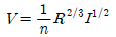
- 유속은 경사가 급할수록 빨라진다.
- 배수로 표면이 거칠수록 유속은 느려진다.
- 동수반경(경심)이 크면 유속이 빨라진다.
- 윤변(물이 닿는 면의 길이)이 길어지면 유속이 빨라진다.
(정답률: 79%)
58. 다음 그림에서 각주공식을 이용한 토량은? (단, 단위는 m이다.)
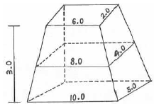
- 47.0m3
- 95.0m3
- 141.0m3
- 282.0m3
(정답률: 66%)
59. 건물, 주차장, 운동장 등은 평탄한 지반이 요구된다. 평탄한 지역을 조성하는 방법에 속 하지 않는 것은?
- 절토에 의한 방법
- 성토에 의한 방법
- 옹벽에 의한 방법
- 배수구 처리에 의한 방법
(정답률: 69%)
60. 가로 5m, 세로 3m인 벽을 1.0B 기본벽돌(190×90×57)로 쌓으려 한다. 개구부가 2m2이고, 할증율을 3% 적용할 때 필요한 벽돌 매수는? (단, 매수는 소수 첫째자리에서 반올림한다.)
- 1004매
- 1159매
- 1995매
- 2302매
(정답률: 60%)
4과목: 조경관리
61. 다음에서 설명하는 ( )안에 해당되는 작용은?
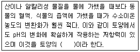
- 완충작용
- 길항작용
- 수용작용
- 흡수작용
(정답률: 50%)
62. 다음 설명에 해당하는 살충제는?
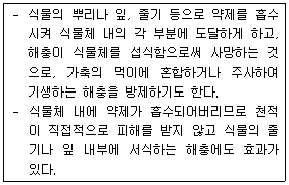
- 소화중독제
- 화학불임제
- 접촉살충제
- 침투성살충제
(정답률: 72%)
63. 옹벽의 유지관리에 대한 설명으로 틀린 것은?
- 옹벽이 파손되어 보수가 불가능할 경우 재시공 설치한다.
- 옹벽의 경사를 확인하여 변화 상태를 점검한다.
- 옹벽이 전도위험이 있을 때는 P·C앵커공법을 사용한다.
- 깬 돌 메쌓기 옹벽은 배수관의 설치 및 관리가 찰쌓기 보다 중요하다.
(정답률: 72%)
64. 다음 [보기]의 설명에 해당되는 시민참여의 형태는?
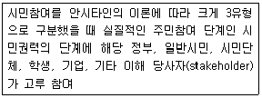
- 시민자치(citizen control)
- 파트너십(partnership)
- 상담자문(consultation)
- 조작(manipulation)
(정답률: 73%)
65. 잣나무 털녹병균의 침입부위(A)와 시기(B)가 맞는 것은?
- A：잎 B：3월~4월
- A：줄기 B：3월~4월
- A：잎 B：9월~10월
- A：줄기 B：9월~10월
(정답률: 55%)
66. 수목 생장시기인 봄에 늦게 내린 서리에 의한 피해는?
- 만상
- 춘상
- 조상
- 추상
(정답률: 68%)
67. 피레트린(Pyrethrin) 살충제는 충제의 어느 부분에 작용하여 효과는 내는가?
- 원형질독
- 신경독
- 근육독
- 피부독
(정답률: 72%)
68. 건물의 청소를 위해 적절한 청소 요원의 수를 결정하는 방법이 아닌 것은?
- 면적에 의한 방법
- 특정지역별 측정에 의한 방법
- 계량적 분석 방법에 의한 방법
- 이용자수의 측정에 의한 방법
(정답률: 62%)
69. 곤충의 채집법 가운데 비행하는 곤충을 채집하기에 가장 부적당한 방법은?
- 말레이즈트랩(Malaise trap)
- 함정트랩 (pitfall trap)
- 페로몬트랩(Pheromone trap)
- 유아등(light trap)
(정답률: 75%)
70. 건축물 관리는 예방보전과 사후보전으로 구분되는데, 이 중 사후보전에 해당되는 작업은?
- 청소
- 도장
- 일상·정기점검
- 보수
(정답률: 80%)
71. 다음 중 성토비탈면의 점검사항으로 가장 관계가 먼 것은?
- 비탈면의 침식유무
- 비탈면의 균열유무
- 암석의 풍화정도
- 보호공의 변화상태
(정답률: 71%)
72. 다음은 전정 및 정지에 대한 요령이다. 이 중 적당하지 않은 것은?
- 길게 자란 가는가지를 다듬을 때에는 옆눈이 있는 곳의 위에서 가지터기를 6~7mm 가량 남겨 두어야 한다.
- 굵고 큰 가지의 전정은 지피융기선을 기준으로 하여 수간의 지륭을 그대로 남겨 둘 수 있는 각도를 유지하여 바짝 자른다.
- 중간 정도의 가지는 10cm정도 남겨 놓고 자르는 것이 병해충의 침입 방지에 좋다.
- 소나무류의 순따기는 생장력이 너무 강하다고 생각될 때에는 1/3∼1/2만 남기고 꺾어 버린다.
(정답률: 57%)
73. 솔잎혹파리의 천적으로 생물적 방제를 위해 방사하는 것은?
- 상수리좀벌
- 노란꼬리좀벌
- 솔잎혹파리먹좀벌
- 남색긴꼬리좀벌
(정답률: 83%)
74. 비탈면을 식생공법으로 시공할 때 식생공사를 선상(線狀) 혹은 대상(帶狀)으로 시공하는 시공법을 선적녹화방식(線的綠化方式) 또는 선적녹화공법(線的綠化工法)이라고 한다. 선적 녹화방식에 해당되는 것은?
- 식생구멍심기
- 종자뿜어붙이기공법
- 식생자루심기공법
- 거적덮기공법
(정답률: 73%)
75. 다음 설명하는 잔디 관리 기계는?
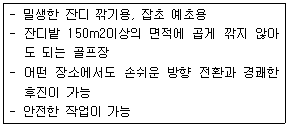
- 자동 스위퍼
- 스파이크 에어
- 로터리모어
- 3연갱모아
(정답률: 76%)
76. 다음 중 사용환경 범주 H1 “건재해충 피해환경 및 실내사용 목재”에 사용 가능한 방부제는?
- AAC
- ACQ
- ACC
- CuAz
(정답률: 58%)
77. 수목시비에 관한 설명 중 옳지 않은 것은?
- 시비 시에 비료가 뿌리에 직접 닿지 않도록 주의한다.
- 화목류의 시비는 잎이 떨어진 후에 효과가 빠른 비료를 준다.
- 환상시비는 뿌리분 둘레를 깊이 0.3m, 가로 0.3m, 세로 0.5m 정도로 흙을 파내고 소요량의 부숙된 유기질비료를 넣은 후 복토한다.
- 지효성의 유기질 비료는 덧거름으로 황산암모늄과 같은 속효성 거름을 밑거름으로 주는 것이 좋다.
(정답률: 56%)
78. 레크리에이션 수용 능력 개념의 설정에 있어서 총 만족량(total satisfaction) 개념을 도입한 사람은?
- Oʹ Riordan
- Rodgers
- Lucas
- Reiner
(정답률: 56%)
79. 수목의 뿌리수술에 가장 적당한 시기는?
- 봄
- 여름
- 가을
- 겨울
(정답률: 74%)
80. 잔디에 뗏밥주기를 하는 이유로 적당하지 않은 것은?
- 잔디면을 평탄하게 하며 잔디깎기를 용이하게 한다.
- 호광성(好光性) 잡초종의 발아율을 낮춘다.
- 지상부 잔디 생장점의 동결을 방지한다
- 토양 멀칭(mulching) 효과로 건조를 방지한다.
(정답률: 52%)